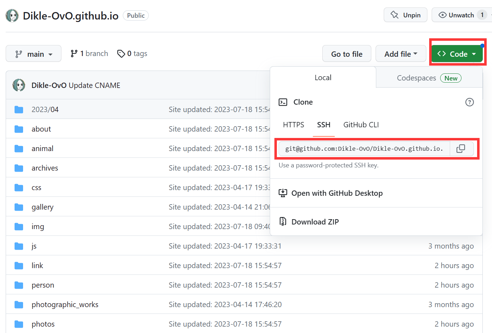
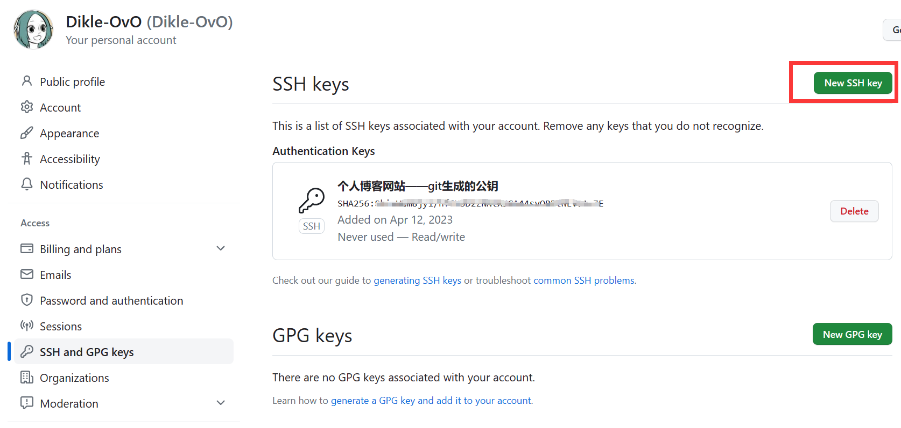

博客搭建记录|教程
前言
首先介绍搭建博客需要使用的东西：Nodejs是一个Javascript运行环境，作为底层架构在本例中实现构建和生成静态网站；Git，是分布式版本控制系统，用于将本地的资源文件上传到服务器端；Github应该不陌生了，全世界最大的程序员交流网站，它同时免费提供静态网站的服务器。
- NodeJs
- Git
- Github账号
- 文本编辑器（如vscode、Typora）
- 一个域名（可选）
- CDN加速（可选）
环境搭建
Nodejs
安装Nodejs
在官方下载地址中选择适合自己系统的版本下载安装即可。
在cmd中输入该命令查看版本号，成功返回版本号即代表安装完毕。
如提示找不到命令，请尝试把nodejs放入系统path中，或在B站、CSDN中查找教程进行卸载重装。
Nodejs自带的包管理工具——npm
在这里，我介绍一下npm（Node Package Manager），它是一个用于管理和共享 JavaScript 包的包管理器，我们使用它来向中央服务器发出请求下载某个模块（比如本文的建站Hexo模块），有Python基础的同学应该会立即联想到Python的pip指令，你的直觉没错的，但仍存在一个主要区别，npm 不仅仅用于管理 JavaScript 包，还用于管理其他前端资源，如样式表、图像、字体等。
npm的中央服务器是架设在国外的，较慢的访问速度不利于我们安装、学习相关模块，可使用以下指令将默认的中央服务器切换为国内的淘宝镜像源。1
npm config set registry https://registry.npm.taobao.org/
Git
官方下载地址
同样是选择合适的版本下载安装即可，具体的安装步骤本文不赘述。
同样使用查看版本号的指令检查是否安装好1
git --version
安装Hexo
使用npm指令安装
使用管理员身份打开Git bash
在Git bash中键入：
1 | npm install -g hexo-cli |
安装部署插件
1 | npm install hexo-deployer-git --save |
其中，可选参数save代表将此插件添加到依赖路径，即执行npm install时，自动安装
配置Github仓库
我们需要在Github注册一个账号，官方网址。
在个人仓库中创建一个名为“yourname.github.io”的仓库，在仓库中点击“CODE”下拉，可以获得登入仓库的ssh链接：

打开博客目录下名字为“_config.yml”的配置文件，拉到最底，会有这样的代码

- type指我们上传的方式，填git
- repository意为仓库，指要上传的目的地，这里填入你自己仓库的ssh链接
- branch指分支，即仓库中不同的划分区域，我们填main就好
Git关联Github
1 | git config --global user.name "你的github账户名" |
通过这两行代码，本地git就能通过你的账户名与邮箱在网络上确定你目标服务器的位置，但你并没有提供密码，所以每次你要上传到仓库，都要输入一次密码验证你是仓库的所有者，那有没有类似“记住密码”的功能呢？有的。
在cmd中输入以下指令，生成git密钥1
ssh-keygen -t rsa -C "一个邮箱地址，可以是github绑定的那个"
生成成功后会给出一个路径，进入该路径其中.pub后缀的就是公钥，另一个为私钥。私钥是你自己持有的，注意保管，而后把公钥内容复制到github->setting->SSH and GPG keys->new SSH key，把公钥粘贴到这里，这样服务器端就可以核验你的身份了。
具体原理参考Chatgpt给出的答案：1
2
3
4
5
6
7
8
9
10
11
12
13SSH 密钥原理主要包括以下几个步骤：
1、生成密钥对：在本地计算机上生成一对密钥，包括公钥和私钥。这对密钥是一对相关联的加密算法生成的。
2、分发公钥：将生成的公钥传输给需要进行身份验证的服务器，比如 GitHub。公钥可以被安全地分享，而私钥必须保密。
3、SSH 连接过程：当你使用 SSH 连接到某个服务器时，客户端会向服务器发送一个请求，要求进行身份验证。
4、服务器验证：服务器收到请求后，会检查客户端提供的公钥是否在其允许的授权密钥列表中。如果匹配成功，服务器会使用公钥对请求进行加密，并返回一个随机生成的消息。
5、客户端验证：客户端收到服务器返回的消息后，使用私钥解密。如果密钥匹配成功，客户端会将解密后的消息发送回服务器进行验证。
6、连接建立：如果验证成功，服务器会允许客户端进行 SSH 连接。
开始写Blog
初始化Hexo
新建一个博客专属的文件夹，注意名称不可以是中文，右键“Git bash here”，即在此处打开命令行，或者在开始菜单打开bash命令行后，使用cd指令进入该文件夹。
使用初始化指令，将在指向的目录中初始化hexo模块，我们的网站也将存在于此。
1 | hexo init |
1 | hexo cl && hexo g && hexo s |
根据访问执行代码后给予的地址即可进行本地访问，如果要把本地的网站上传到github pages服务器，则使用以下代码。1
hexo d
编写文章
使用以下格式指令即可生成markdown格式的文章模板，储存在source文件夹中1
hexo new [模板名] <文章名>
模板的配置文件在scaffolds中，默认自带有post、page、draft
Markdown介绍
Markdown是一种轻量级标记语言，拥有自己的格式，因此它是跨语言，跨平台的。本人推荐使用VSCODE进行编写，VS内置对该语法的支持，支持格式纠错，生成HTML预览，对新人友好。
可在菜鸟教程-Markdown中学习相关语法。
美化介绍
hexo可以很方便的切换主题，笔者推荐两个，喜欢简洁的可以用fluid,喜欢更多个性化配置的可以用butterfly,他们的网址中有很详细的介绍，笔者就不赘述了.
云服务器配置
使用GitPage可以很方便快速的建立起可供访问的博客，但仓库必须设定为公开，别人可以很轻易的查看设定为未发布、隐藏的草稿等不希望被获取的信息，其隐私性并不能得到很好的保障。现在介绍使用阿里云的ECS服务器实例搭建博客，配置为2核2G带宽3M，资费为99元/年。
服务器环境配置
首先配置基本环境，包括NVM(管理NodeJS版本用)、NodeJs、Nginx、Git：官方配置文档1
2
3
4
5
6
7
8
9
10
11
12
13下载NVM源码
git clone https://gitee.com/mirrors/nvm.git ~/.nvm && cd ~/.nvm && git checkout `git describe --abbrev=0 --tags`
配置NVM的环境变量
sudo sh -c 'echo ". ~/.nvm/nvm.sh" >> /etc/profile'
source /etc/profile
配置镜像源为国内的阿里源
export NVM_NODEJS_ORG_MIRROR=https://npmmirror.com/mirrors/node
安装NodeJs
nvm install v22.11.0
安装其余软件
sudo apt install -y git nginx
而后配置ssh，确保能够正常连接以及推送git仓库1
2
3
4
5
6
7
8
9
10服务器端操作：确保 .ssh 目录存在并设置权限
mkdir -p ~/.ssh
chmod 700 ~/.ssh # 关键：权限必须为 700，否则 SSH 会忽略
创建 authorized_keys 文件并设置权限
touch ~/.ssh/authorized_keys
chmod 600 ~/.ssh/authorized_keys # 权限必须为 600
打开文件，粘贴公钥
vim ~/.ssh/authorized_keys
Nginx配置
1
2
3
4
5
6# 创建博客存放目录（如 /var/www/hexo-blog）
sudo mkdir -p /var/www/hexo-blog
sudo chown $USER:$USER /var/www/hexo-blog # 赋予当前用户权限
# 配置 Nginx 站点
sudo vim /etc/nginx/sites-available/hexo-blog
其配置文件内容如下：1
2
3
4
5
6
7
8
9
10
11
12
13
14
15
16server {
listen 80;
server_name your_domain.com; # 或服务器公网 IP
root /var/www/hexo-blog; # 指向 Hexo 生成的 public 目录
index index.html index.htm;
# 启用 gzip 压缩，优化加载速度
gzip on;
gzip_types text/plain text/css application/json application/javascript text/xml application/xml application/xml+rss text/javascript;
# 处理 Hexo 的永久链接（避免 404 错误）
location / {
try_files $uri $uri/ =404;
}
}
载入配置后重启Nginx1
2
3sudo ln -s /etc/nginx/sites-available/hexo-blog /etc/nginx/sites-enabled/
sudo nginx -t # 检查配置是否有误
sudo systemctl restart nginx
git配置
1 | # 服务器端操作：创建 Git 仓库目录 |
钩子脚本内容如下：1
2
3
4
5
6
7
8
9!/bin/bash
GIT_REPO=~/hexo-repo.git
TMP_GIT_CLONE=/tmp/hexo-blog
PUBLIC_WWW=/var/www/hexo-blog # Nginx 指向的目录
rm -rf $TMP_GIT_CLONE
git clone $GIT_REPO $TMP_GIT_CLONE
rm -rf $PUBLIC_WWW/*
cp -rf $TMP_GIT_CLONE/public/* $PUBLIC_WWW/
测试
1 | ls /var/www/hexo-blog |